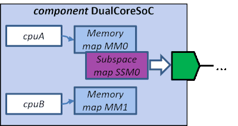

The cpus editor lists the programmable cores the component contains. This way the tools can recognize them and distinguish from hardwired components. One component can have multiple cores.
Name is a mandatory identifier for the cpu.
Display name is an optional and used for a more user-friendly identifier.
Short description is an optional field for compact description of the cpu.
Memory map reference is mandatory and maps the address space defined by range and width to a memory map in the component.
Range is mandatory and defines the address range in the memory map accessible by the cpu.
Width is mandatory and defines the bit width of a row in the memory map for the cpu.
Address unit bits (AUB) is an optinal field that defines the number of data bits each address increment in the address space contains. The default setting for a cpu address space is byte addressable (8 bits).
Description is an optional field for textual description of the cpu.
Cpus editor provides a context menu (right mouse button) with the following options:
EXAMPLE.
Example SoC has two CPUs and both refer to a memory map.
The first memory map is bound to an initiator bus interface using
a sub-space map whereas the second has only a memory map with registers.
Consequently, cpuA has access to the global address space of the
initiator bus interface and cpuB does not.
